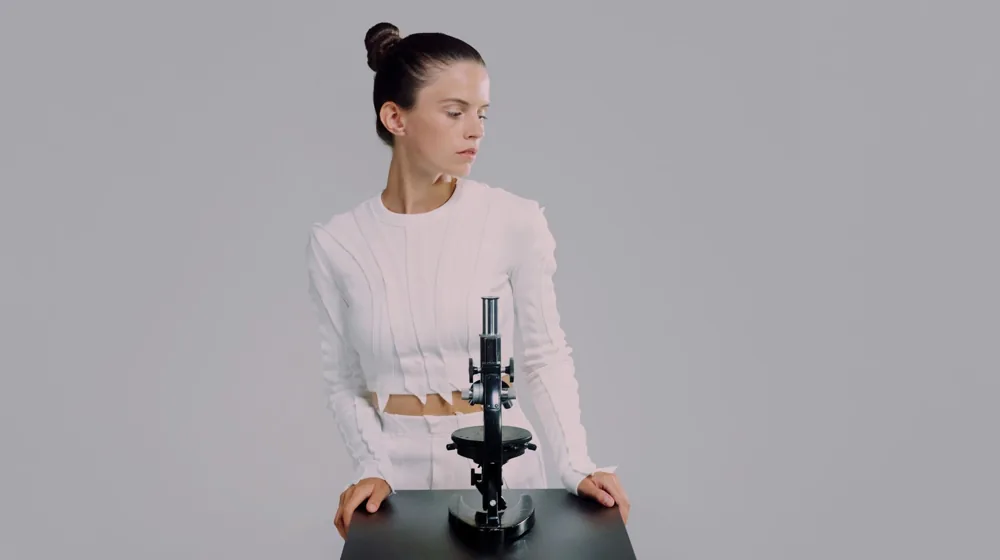

전성배, 대체 왜 난리일까? 잠자던 천재가 깨어나다!
사진: Ron Lach / Pexels (무료 이미지, 출처 표기)
평범한 이름 '전성배', 오늘 대한민국을 강타하다!

오늘 아침, 당신의 검색창에 낯선 이름 석 자가 뜨겁게 달아오르는 것을 보셨나요? 바로 '전성배'입니다. 평범하기 그지없는 이 이름이 하루아침에 대한민국 온라인을 발칵 뒤집어 놓으며 실시간 검색어 1위에 등극했습니다. 도대체 '전성배'는 누구이며, 어떤 놀라운 이야기가 숨겨져 있기에 수많은 이들이 그의 이름을 외치고 있는 걸까요? 마치 순간포착 세상에 이런 일이 한 장면처럼, 모두를 깜짝 놀라게 한 그 미스터리한 급상승의 비밀을 지금부터 함께 파헤쳐 보겠습니다!
오랜 침묵을 깬 하나의 발견: 전성배, 그는 누구인가?
‘전성배’라는 이름 석 자를 접했을 때, 대부분의 사람들은 특정 유명인이나 스포츠 스타를 떠올리지 못했을 것입니다. 하지만 지금 그 이름은 역사적인 전환점을 맞이하고 있습니다. 전성배 박사는 수십 년간 빛을 보지 못했던 ‘미래형 에너지 효율 증폭 기술’ 분야의 숨겨진 거장이었습니다. 그의 연구는 너무나 혁신적이라, 당시에는 이해받기 어려웠고, 학계에서조차 이단아 취급을 받으며 조용히 묻히는 듯했습니다. 그는 좌절하지 않고 묵묵히 연구를 이어갔고, 그 결과물이 지금, 전 세계를 놀라게 할 준비를 마쳤습니다.
세상을 바꿀 그의 '그것', 왜 이제야 빛을 보게 되었을까?
그렇다면 왜 지금, 전성배 박사의 이름이 화제가 되는 걸까요? 그 이면에는 놀라운 반전이 숨어 있습니다. 최근 전 세계적인 에너지 위기와 탄소 중립 목표 달성의 압박 속에서, 인공지능 기반의 차세대 에너지 솔루션을 찾던 글로벌 유수 연구팀이 우연히 전성배 박사의 과거 논문을 재발견했습니다. 처음엔 단순한 옛 자료로 치부했지만, 놀랍게도 그의 이론이 현재의 최첨단 AI 컴퓨팅 환경에서 완벽하게 구현될 수 있음이 밝혀진 것입니다. 그가 수십 년 전에 제시했던 개념들이 이제야 비로소 기술적으로 검증되며, ‘시대를 앞서간 천재’라는 평가와 함께 재조명받기 시작한 것입니다.
전성배 박사의 '에너지 효율 증폭 기술' 무엇이 다른가?
기존의 에너지 기술들이 가진 한계를 뛰어넘는 전성배 박사의 기술은 다음과 같은 혁신을 약속합니다.
- 획기적인 효율성: 투입 에너지 대비 산출 에너지를 극대화하여 기존 대비 최대 300% 이상의 효율 증폭이 가능합니다.
- 친환경성: 오염물질 배출이 거의 없어 탄소 중립 시대의 핵심 기술로 주목받습니다.
- 범용성: 발전소, 산업 시설뿐만 아니라 스마트 도시, 개인 가정 등 광범위한 분야에 적용될 수 있습니다.
- 경제성: 초기 투자 비용은 높지만 장기적으로 압도적인 운영 비용 절감 효과를 가져옵니다.
비하인드 스토리: 전성배 박사의 끈기와 좌절, 그리고 반전
전성배 박사의 이야기는 단순한 과학적 성취를 넘어선 인간 승리의 드라마입니다. 수십 년간 외로운 연구실에서 홀로 연구하며 수많은 비판과 재정적 어려움에 시달렸습니다. 가족조차 그의 연구를 이해하지 못하고 등을 돌렸던 날들도 많았다고 합니다. 하지만 그는 자신이 옳다는 믿음 하나로 모든 역경을 견뎌냈습니다. 마치 호기심 천국에서 다뤘던 기인의 이야기처럼, 남들이 가지 않는 길을 묵묵히 걸어갔던 것입니다. 그리고 마침내, 세상이 그의 진가를 알아보기 시작하면서 그의 삶은 극적인 반전을 맞이했습니다. 한때 ‘미친 과학자’로 불리던 그가 이제 ‘시대를 바꾼 선구자’로 추앙받는 순간입니다.
당신의 미래를 바꿀지도 모를 그의 연구, 우리가 주목해야 할 이유
전성배 박사의 기술은 단순한 에너지 절약을 넘어, 우리 인류의 미래 자체를 바꿀 잠재력을 가지고 있습니다. 기후 변화와 에너지 고갈이라는 인류의 숙제를 해결할 열쇠가 될지도 모릅니다. 그의 이야기는 우리에게 중요한 메시지를 던집니다. 세상이 당장 이해하지 못하더라도, 진실과 혁신은 언젠가 반드시 빛을 본다는 것을 말이죠. 그의 이름이 오늘 대한민국을 뜨겁게 달군 이유, 이제 명확해졌나요? 우리는 지금, 역사의 한 페이지가 새로 쓰이는 순간을 목격하고 있습니다. 앞으로 전성배 박사와 그의 기술이 만들어낼 미래를 기대해 보셔도 좋을 것입니다!
기존 기술 vs. 전성배 박사의 신기술
🔗 이 글도 함께 보면 좋아요: 아이온큐, 지금 왜 모두가 주목할까? 양자 기술의 미래를 훔쳐보다!